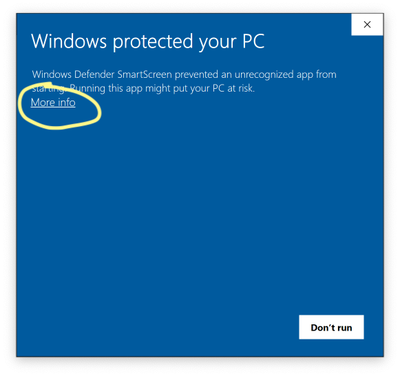
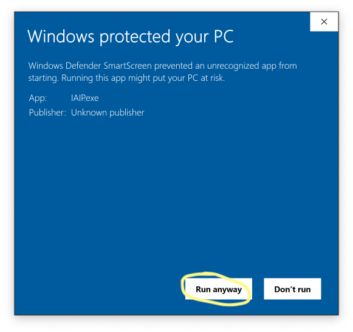
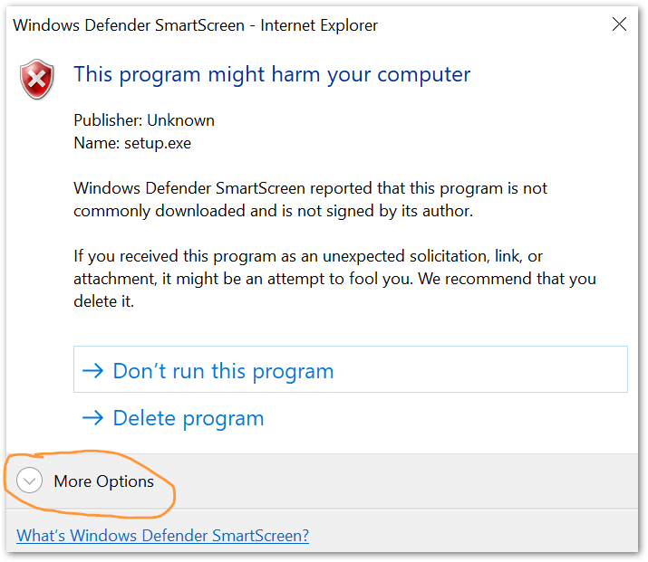
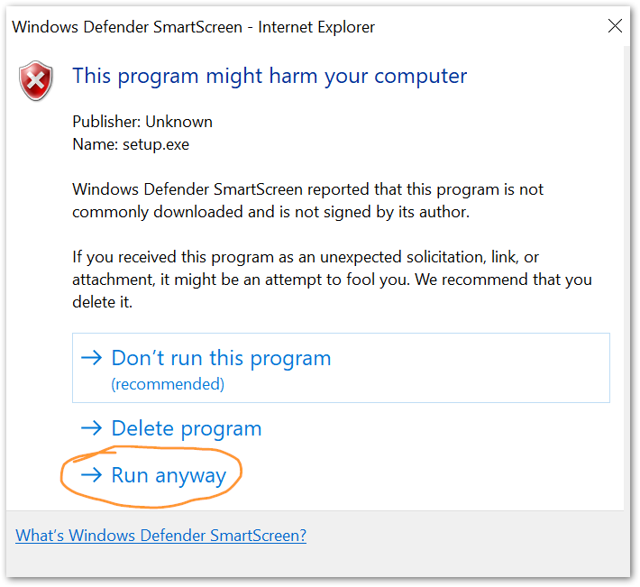

The IAIP is used by the Georgia Environmental Protection Division to collect and organize data required by the Air Protection Branch.
For account management and general application support, please contact your supervisor in EPD or Sean Taylor in the Air Branch. To report an error or bug, please create an EPD-IT Support Ticket.
Click this button to download and run the setup file.
The installer does not require admin permissions. You will likely get one or more security alerts such as those shown below when you run the installer. Click the “More info” or “More options” link, then click the button labeled “Run anyway”.




The IAIP may only be used while connected to the DNR GlobalProtect VPN. This applies while located within an EPD office or when working remotely.
Your username and password for the IAIP are not the same as your SOG login.
See the change log.
The IAIP is Copyright © State of Georgia. This product is licensed for use only by employees of the State of Georgia.
Source code for the IAIP and this website are available on GitHub.